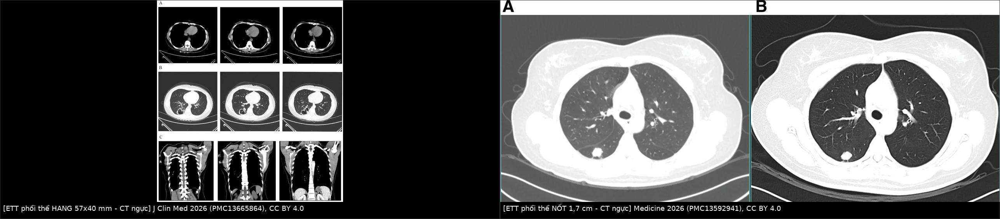
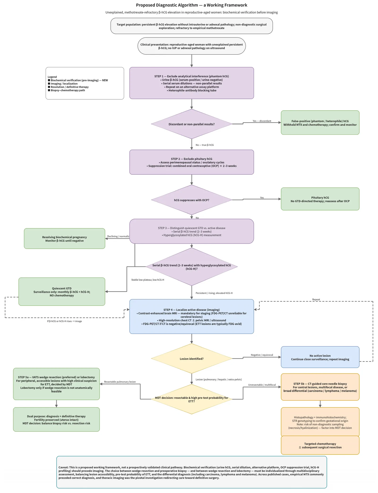
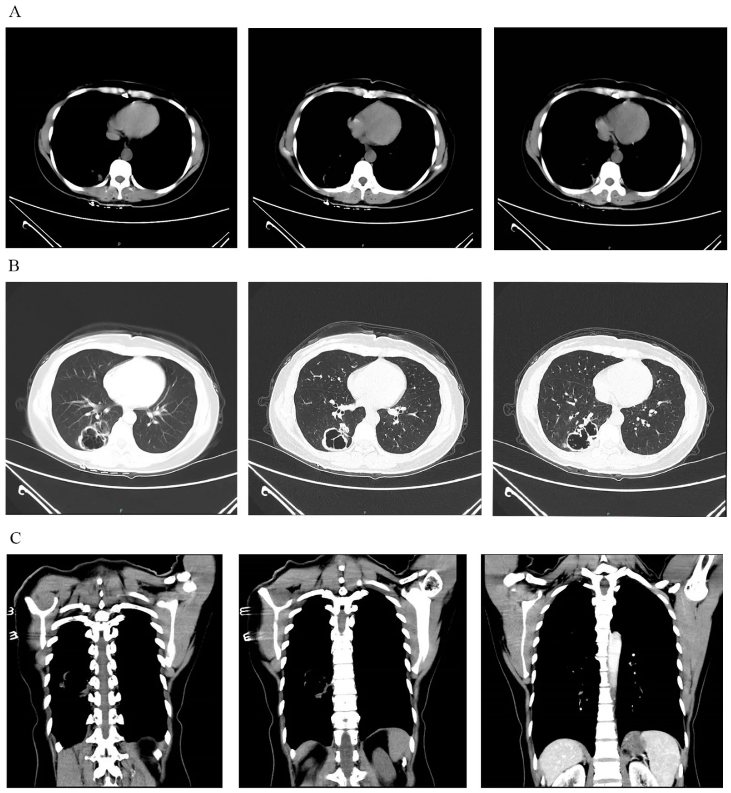
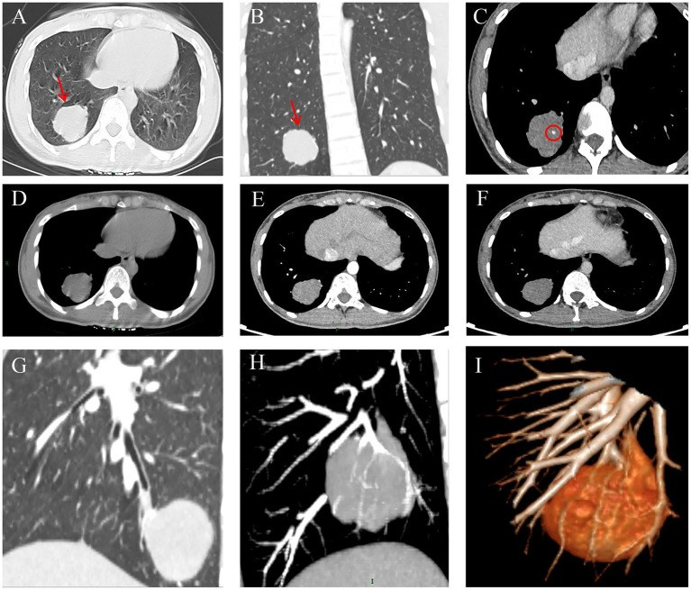

1621 — Nốt/hang phổi đơn độc ở nữ tuổi sinh sản: ETT di căn phổi / Solitary lung nodule or cavity in a reproductive-aged woman — pulmonary epithelioid trophoblastic tumor
Tags: pattern:hang pattern:not-phoi vung:phoi score:FIGO-2000-WHO protocol:CT-nguc protocol:MRI-chau incidentaloma:not-phoi
Mức chắc chắn (certainty): tổng hợp y văn (literature synthesis) — chủ đề không có RCT; số liệu chính lấy từ tổng hợp 30 ca ETT phổi không có tổn thương tử cung (PMC13665864), 2 ca nguyên văn có ảnh (PMC13070938, PMC13592941) và 1 bảng so sánh ETT với choriocarcinoma trong PMC13665864. Câu suy luận từ bằng chứng gián tiếp được ghi [suy luận].
1. Tổng quan bệnh học – cơ chế hình ảnh
- ETT là gì: u nguyên bào nuôi dạng biểu mô (epithelioid trophoblastic tumor, ETT) phát sinh từ nguyên bào nuôi trung gian loại màng nuôi (chorionic-type intermediate trophoblast); là thể hiếm nhất trong 4 thể bệnh nguyên bào nuôi thai kỳ (GTN), chiếm 1,4–2,0% (có nguồn ghi < 1–2%). Đặc điểm: phát triển chậm, kháng hóa trị đơn chất, mô học giống carcinoma (tế bào epithelioid, chất hyaline quanh nốt).
- TẠI SAO phổi là nơi di căn đầu tiên: tế bào nuôi bong vào xoang tĩnh mạch tử cung → về tim phải → giường mao mạch phổi là "bộ lọc" đầu tiên. Vì vậy phổi là vị trí di căn xa chính của GTN; ETT có thể chỉ biểu hiện ở phổi mà không thấy tổn thương tử cung — y văn ghi nhận 29–30 ca như vậy (PMC13665864, PMC13592941).
- TẠI SAO β-hCG thấp — điểm bẫy quan trọng nhất: ETT có ít nguyên bào hợp bào (syncytiotrophoblast) — nguồn tiết hCG chính — nên β-hCG chỉ tăng nhẹ. Trong 30 ca ETT phổi: 0,7–2.204 mIU/mL, trung vị 304, và 73,3% dưới 1.000 mIU/mL; trong khi choriocarcinoma thường > 10.000 mIU/mL (PMC13665864). Hệ quả: bệnh nhân bị chẩn đoán nhầm là thai ngoài tử cung và điều trị methotrexate lặp lại.
- Giải thích hình ảnh bằng mô bệnh:
- ETT phổi điển hình là nốt/khối đặc, hoại tử trung tâm → hang thành dày không đều; ca PMC13665864: hang 57 × 40 mm ở phân thùy đáy sau dưới phải, thành dày không đều, ngấm thuốc nhẹ, kèm nhiều nốt vệ tinh, nốt lớn nhất 23 × 15 mm.
- Một số ca là nốt đặc tròn, có vôi hóa, ngấm thuốc 45 HU thì động mạch → 56 HU thì tĩnh mạch (PMC13070938) — tức ngấm ít–trung bình, khác ung thư phổi thường ngấm mạnh hơn.
- Ca khác lại là nốt 1,7 × 1,5 cm có gai và thùy (burr and lobulation), kéo dây chằng màng phổi (PMC13592941) — không phân biệt được với ung thư phổi ngoại vi trên CT.
- Vì sao không có dấu hiệu đặc trưng: tổn thương là mô nuôi "lành tính về hình thái" nhưng phá hủy — không có vôi hóa đặc hiệu, không có hình dạng đặc hiệu; chẩn đoán là mô bệnh học + hóa mô miễn dịch, không phải hình ảnh.
- Hóa mô miễn dịch chốt chẩn đoán (dùng để phân biệt với ung thư phổi): p63 dương nhân lan tỏa (đặc trưng), CK7 (+), GATA-3 (+), β-catenin (+), hPL và β-hCG dương ổ/focal ở tế bào đa nhân; Ki-67 10–25% (có thể tới 30% ở vùng hotspot); âm với TTF-1, p40/CK5/6, p16, MUC4 (PMC13665864). Choriocarcinoma thì Ki-67 > 50%, β-hCG mạnh và lan tỏa.
- Số liệu tổng hợp 30 ca (dùng để tư vấn): tuổi trung vị 33 (23–49); 46,7% ra máu âm đạo bất thường; 26,7% phát hiện tình cờ trên hình ảnh; tiền sử sinh đủ tháng 50%, khoảng cách trung vị 36 tháng (3–96); 73,3% mổ nội soi lồng ngực (VATS); 60% hóa trị bổ trợ (EMA/CO n = 8, EMA/EP n = 7); theo dõi trung vị 24 tháng (3–90); 93,3% sống không bệnh; 2 ca kết cục xấu đều do mổ không triệt để hoặc điều trị chưa đủ (PMC13665864).
2. Mẫu hình + chẩn đoán phân biệt theo hình thái (Gamut)
- Hang đơn độc thành dày ở nữ tuổi sinh sản: ETT di căn · ung thư phổi tế bào vảy (SCC) · lao hang · áp-xe phổi · aspergilloma trong hang cũ · u hạt do GPA · nhồi máu phổi có hang · di căn từ nơi khác.
- Nốt đơn độc: ETT · ung thư phổi nguyên phát · di căn (vú, đại tràng, sarcoma) · hamartoma · lao/u hạt · nấm.
- Đa nốt hai phổi: choriocarcinoma di căn phổi · thuyên tắc nhiễm khuẩn (septic emboli) · di căn nhiều nguồn · lao lan tỏa.
- Hang + nốt vệ tinh: lao (thùy trên, tree-in-bud) · ETT (ca 57 mm có nốt vệ tinh 23 × 15 mm) · SCC hoại tử.
- Nang mỏng thành/khí trong phổi: kén khí, bulla, lymphangioleiomyomatosis — không phải nhóm này nhưng dễ bị gộp khi đọc nhanh.
- Nguyên tắc gamut: ở nữ 15–49 tuổi có bất kỳ tổn thương phổi nào + β-hCG tăng không giải thích được, phải đưa GTN/ETT vào chẩn đoán phân biệt — kể cả khi tử cung trống trên siêu âm và MRI (30 ca đã báo).
3. Bảng so sánh phân biệt (ma trận đối chiếu)
| Thực thể (entity) | Hình ảnh điển hình (CT ngực) | Chốt vào (rule-in) | Chốt loại (rule-out) | Gợi ý xác nhận |
|---|---|---|---|---|
| ETT phổi (di căn/nguyên phát tại phổi) | Nốt/hang đơn độc, thành dày không đều, ngấm nhẹ–trung bình, ± vôi hóa, ± nốt vệ tinh; có thể có gai giả ung thư | β-hCG tăng nhẹ (trung vị ~304, 73% < 1.000) + nốt/hang phổi + tử cung trống trên MRI | β-hCG âm hoàn toàn và không có tiền sử thai kỳ → ít nghĩ ETT (nhưng ETT có thể hCG trong "bình thường") | Mô bệnh: p63 dương nhân lan tỏa, Ki-67 10–30%, TTF-1 âm |
| Choriocarcinoma di căn phổi | Đa nốt hai phổi, nốt lớn nhanh, ± hang, ± tràn máu màng phổi | β-hCG rất cao (> 10.000 mIU/mL) + đa nốt + tiền sử thai trứng | hCG thấp < 1.000 + nốt đơn độc → nghĩ ETT/PSTT hơn | hCG serial; mô bệnh: Ki-67 > 50%, hCG mạnh lan tỏa |
| Ung thư phổi nguyên phát (SCC) | Nốt có gai, thùy, co kéo màng phổi, hang thành dày lệch tâm, ± hạch rốn phổi | Tuổi > 50, hút thuốc, hạch rốn phổi, không có hCG | Nữ sinh sản + hCG tăng + không hạch → không chốt ung thư phổi | Sinh thiết/EBUS; TTF-1, p40, CK5/6 dương |
| Lao hang | Thùy trên/đỉnh sau, thành mỏng đều, tree-in-bud + nốt vệ tinh, ± vôi hóa | Tree-in-bud + nốt vệ tinh + vị trí đỉnh sau | Hang đơn độc thành dày + hCG tăng → không phải lao đơn thuần | AFB/PCR dịch rửa; IGRA (âm không loại trừ) |
| Áp-xe phổi | Hang có mức khí–dịch, đông đặc quanh, góc nhọn với màng phổi | Sốt cao + đờm hôi + mức khí–dịch ngang | Không sốt, không mức dịch, hCG tăng → nghĩ ETT | Cấy máu/đờm; đáp ứng kháng sinh |
| Hamartoma | Nốt bờ nhẵn, mỡ −40 đến −120 HU, vôi hóa "popcorn" | Có mỡ trong nốt + vôi hóa popcorn | Không mỡ, ngấm thuốc, hCG tăng → không phải hamartoma | CT lát mỏng; theo dõi ổn định nhiều năm |

Trái: hang 57 × 40 mm thành dày không đều ở phân thùy đáy sau dưới phải, kèm nốt vệ tinh (J Clin Med 2026, PMC13665864). Phải: nốt 1,7 × 1,5 cm có gai và thùy, giả ung thư phổi ngoại vi (Medicine 2026, PMC13592941). Cả hai đều CC BY 4.0; ảnh ghép letterbox, giữ nguyên tỷ lệ.4. Protocol chẩn đoán + phân giai đoạn + theo dõi
4.1 Trình tự bắt buộc khi gặp "nốt/hang phổi + β-hCG tăng"
- Loại trừ hCG giả (phantom hCG) và hCG tuyến yên trước khi điều trị: xét nghiệm hCG nước tiểu (âm mà huyết thanh dương = nghi kháng thể dị loài), pha loãng huyết thanh (không tuyến tính = nghi giả), ức chế bằng thuốc tránh thai 2–3 tuần (hCG giảm = nguồn tuyến yên, không phải GTN).
- Loại trừ thai/GTN trong tử cung: siêu âm đầu dò âm đạo + MRI tiểu khung có cản quang (đánh giá cơ tử cung, cổ tử cung, phần phụ). Nội mạc dày 10–12 mm có thể chỉ do hCG cao kéo dài, không đồng nghĩa có u.
- Chụp phổi: CT ngực lát mỏng ≤ 1 mm, có cản quang (đánh giá hang/nốt, hạch, màng phổi). PET/CT khi CT âm hoặc không kết luận — tổn thương ETT thường ngấm FDG, nhưng PET không thay thế mô bệnh học.
- MRI não khi đã xác định di căn phổi (giai đoạn III trở lên) để tìm di căn não (giai đoạn IV).
- Lấy mô: ưu tiên cắt bỏ tổn thương phổi có chẩn đoán (VATS wedge/lobectomy) vì vừa chẩn đoán vừa điều trị; sinh thiết kim chỉ khi tổn thương không mổ được/đa ổ — tổn thương nuôi mạch máu, nguy cơ chảy máu và gieo tế bào.
4.2 Phân giai đoạn và điểm nguy cơ
- FIGO 2000 (giải phẫu): I = tử cung; II = tiểu khung/âm đạo; III = di căn phổi; IV = di căn xa khác (não, gan, thận).
- Thang điểm tiên lượng WHO (modified): ≤ 6 = nguy cơ thấp (hóa trị đơn chất); ≥ 7 = nguy cơ cao (đa chất). Điểm gồm tuổi, thai kỳ trước, khoảng cách, hCG trước điều trị, kích thước u, vị trí/số di căn, số hóa trị thất bại trước đó.
- Ca PMC13665864: 39 tuổi, thai đủ tháng trước đó (2 điểm), khoảng cách 36 tháng (4 điểm), hCG 978–1.100 (1 điểm), u 57 mm (2 điểm), di căn phổi (0 điểm), 1 di căn (1 điểm), đã thất bại methotrexate (2 điểm) → tổng 12 điểm, FIGO III:12 — nhóm nguy cơ rất cao.
- Điều trị: phẫu thuật cắt trọn tổn thương là nền tảng (ETT kháng hóa trị đơn chất); hóa trị đa chất EMA/CO (etoposide, methotrexate, actinomycin D + cyclophosphamide, vincristine) là lựa chọn đầu tay khi di căn/nguy cơ cao; EMA/EP khi kháng EMA/CO. Bảo tồn tử cung khi không có tổn thương tử cung (cả 3 ca đều không cắt tử cung).
4.3 Sơ đồ tiếp cận
flowchart TD
A[Nốt hoặc hang phổi ở nữ tuổi sinh sản] --> B{beta-hCG tăng?}
B -->|Không| Z[Tiếp cận nốt phổi thông thường: Fleischner, PET, sinh thiết]
B -->|Có| C[Loại trừ hCG giả và hCG tuyến yên]
C --> D{Thật là hCG?}
D -->|Không| D1[Không điều trị GTN, theo dõi]
D -->|Có| E[Siêu âm và MRI tiểu khung: có tổn thương tử cung?]
E -->|Có| F[GTN có ổ tử cung: FIGO và WHO score, hóa trị phối hợp]
E -->|Không| G[CT ngực lát mỏng; MRI não; PET/CT nếu chưa rõ]
G --> H{Tổn thương phổi mổ được?}
H -->|Có| I[VATS wedge hoặc lobectomy: vừa chẩn đoán vừa điều trị]
H -->|Không| J[Sinh thiết kim có hướng dẫn + hóa trị đa chất]
I --> K[Theo dõi hCG và CT ngực theo lịch]
J --> K

Sơ đồ gốc (tiếng Anh) của bài PMC13665864: 5 bước từ xác nhận sinh hóa → loại trừ hCG tuyến yên → phân biệt GTN tồn dư → định vị tổn thương bằng hình ảnh → mổ hay sinh thiết. Nguồn: J Clin Med 2026 (PMC13665864), CC BY 4.0.4.4 Lịch theo dõi (theo ca PMC13665864 và đồng thuận GTN)
- β-hCG: hàng tuần trong hóa trị và 3 tháng đầu sau kết thúc; 2 tuần/lần trong 3 tháng tiếp; hàng tháng trong năm thứ 2; 3 tháng/lần từ năm thứ 3.
- Hình ảnh: CT ngực + siêu âm tiểu khung mỗi 3 tháng trong năm đầu, 6 tháng/lần năm thứ 2, hàng năm từ năm thứ 3. Cả 3 ca đều không tái phát sau 3 năm.
- Tư vấn: hCG về bình thường và ổn định mới được coi là lui bệnh; tránh có thai trong thời gian theo dõi (vì hCG thai kỳ sẽ che lấp tái phát) — khuyến cáo chung của GTN, không riêng ETT.
5. Biến thể bình thường và cạm bẫy
- Điều trị methotrexate theo "thai ngoài tử cung" là bẫy lớn nhất: cả 3 ca đều bị chẩn đoán nhầm; một ca giữ hCG 349–561 mIU/mL hơn 3 năm trước khi tìm ra ETT phổi (PMC13665864 dẫn Slattery). Quy tắc: hCG không giảm về 0 sau methotrexate + không thấy thai trong tử cung/phần phụ → chụp phổi.
- hCG "bình thường" vẫn có thể là ETT: dải 0,7–2.204 mIU/mL, trung vị 304; 73,3% dưới 1.000 — đừng chờ hCG "thật cao".
- Phantom hCG (kháng thể dị loài): hCG huyết thanh dương nhưng hCG nước tiểu âm, pha loãng không tuyến tính → không hóa trị, không mổ.
- hCG tuyến yên ở quanh mãn kinh: giảm khi dùng thuốc tránh thai 2–3 tuần → không phải GTN.
- Bệnh nguyên bào nuôi "im lặng" (quiescent GTD): hCG thấp, ổn định, hCG-H cao → theo dõi, không hóa trị; phân biệt bằng xu hướng hCG nhiều tuần.
- Sinh thiết kim tổn thương nuôi mạch máu → chảy máu, gieo mầm; chỉ làm khi không mổ được.
- Đọc hang là lao vì có nốt vệ tinh: ca 57 mm có nhiều nốt quanh hang — nếu bỏ qua hCG sẽ điều trị lao và mất thời gian.
- "Tử cung trống trên siêu âm = không phải GTN" là kết luận sai: 30 ca ETT phổi không có tổn thương tử cung; vẫn có thể có ổ vi thể trong tử cung.
6. Tự lượng giá — Blind Quiz
Ca 1 — Nữ 39 tuổi, ra máu âm đạo, β-hCG 978 → 1.100 mIU/mL sau methotrexate; tử cung và phần phụ trống trên MRI.

- Câu hỏi: (1) Mô tả tổn thương. (2) Vì sao hCG chỉ ~1.000 mà vẫn là ung thư? (3) Ba chẩn đoán phân biệt và bước xác nhận?
Bấm để hiện đáp án (findings + chẩn đoán)
- Findings: hang 57 × 40 mm ở phân thùy đáy sau dưới phổi phải, thành dày không đều, ngấm thuốc nhẹ; nhiều nốt vệ tinh, lớn nhất 23 × 15 mm; không hạch trung thất.
- Vì sao hCG thấp: ETT xuất phát từ nguyên bào nuôi trung gian → ít nguyên bào hợp bào tiết hCG; hCG không tương xứng với khối u.
- Chẩn đoán: ETT phổi không có tổn thương tử cung, FIGO III:12; mổ nội soi cắt thùy dưới phải + 3 chu kỳ EMA/CO → hCG về < 5 mIU/mL, không tái phát sau 3 năm.
- Phân biệt: SCC phổi (thường có hạch, hCG âm), lao hang (tree-in-bud, hCG âm), áp-xe (mức khí–dịch, sốt).
- Nguồn: J Clin Med 2026 (PMC13665864), CC BY 4.0.
Ca 2 — Hai bệnh nhân nữ 29 và 31 tuổi, đều có hCG tăng nhẹ và một tổn thương phổi đơn độc.
- Câu hỏi: Hình nào giả ung thư phổi hơn? Vì sao không thể chốt bằng hình ảnh?
Bấm để hiện đáp án
- Trái: hang thành dày không đều 57 × 40 mm + nốt vệ tinh → giống SCC hoại tử/lao hang.
- Phải: nốt 1,7 × 1,5 cm có gai, thùy, kéo màng phổi → giống ung thư phổi ngoại vi nhất.
- Không chốt được bằng hình ảnh: ETT không có dấu hiệu CT đặc hiệu; chẩn đoán bằng mô bệnh + hóa mô miễn dịch (p63 dương nhân lan tỏa, Ki-67 10–30%, TTF-1 âm). Cả hai ca đều được chẩn đoán sau khi cắt tổn thương bằng VATS.
- Nguồn: J Clin Med 2026 (PMC13665864) và Medicine 2026 (PMC13592941), CC BY 4.0.
Ca 3 — Nữ 29 tuổi, khám sức khỏe phát hiện tổn thương phổi, không triệu chứng; β-hCG 659,44 mIU/mL.

- Câu hỏi: Dấu hiệu nào giúp nghĩ tổn thương không phải ung thư phổi thông thường? Bước tiếp theo?
Bấm để hiện đáp án
- Khối tròn, bờ nhẵn, có vôi hóa trong u, ngấm thuốc 45 HU (động mạch) → 56 HU (tĩnh mạch) — ngấm ít–trung bình; không hạch trung thất.
- Bước tiếp theo: xác nhận hCG thật (nước tiểu, pha loãng), MRI tiểu khung (không thấy ổ tử cung), rồi VATS cắt thùy dưới phải — vừa chẩn đoán vừa điều trị; kết quả mô bệnh: ETT phổi.
- Nguồn: Front Med 2026 (PMC13070938), CC BY 4.0.
Bài liên quan chéo
- 559 – PSTT & ETT: khối xâm lấn cơ tử cung, hCG thấp & FIGO
- 551 – Bệnh nguyên bào nuôi thai kỳ: thai trứng & choriocarcinoma
- 550 – Thai sớm, sảy thai & thai ngoài tử cung
- 020 – Nốt phổi
- 025 – Tổn thương phổi tạo hang & dấu liềm khí
- 577 – Theo dõi & phát hiện tái phát ung thư phụ khoa: RECIST, CA-125, PET/CT
- 500 – Tổng quan hệ Vú & Sản Phụ khoa
Không dùng để chẩn đoán độc lập khi chưa có người hướng dẫn.